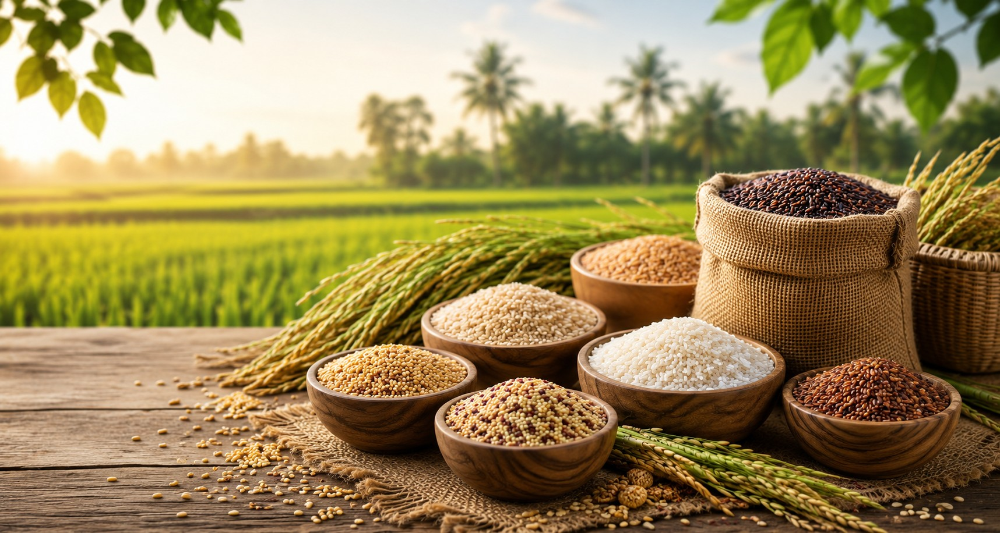

OUR COLLECTION
Featured Products
Carefully selected traditional grains that support a healthier lifestyle.


Mayil Organics brings premium traditional grains, millets and healthy organic products directly from trusted sources.

Carefully selected traditional grains that support a healthier lifestyle.
Bringing nature's goodness to every family with carefully selected traditional products.
No artificial colours or preservatives.
Authentic varieties loved for generations.
Carefully selected and hygienically packed.
Safe delivery across India.

Mayil Organics by VELS ENTERPRISES is dedicated to bringing premium traditional grains, millets and organic products to every home.
We believe healthy living begins with pure ingredients. Every product is selected with care and packed to preserve freshness and nutrition.
Read MoreQuality products trusted by families.
Excellent quality products with fresh taste. Highly recommended.
Traditional grains packed hygienically. Great customer support.
Healthy products at affordable prices. Will order again.
Contact us today for retail and wholesale enquiries.